muf · prohibition remake · rave clandestine, paris 1998
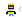
Le pipeline
des agents
Dix-huit subagents, une seule chaîne de production : chaque feature passe
de main en main, étape 0 à 8, jamais en silo. Les lanes tournent en parallèle sur des
chemins disjoints, les gates bloquent, et chaque passage de main est
loggé dans docs/handoffs/.
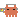
producer Marion 📆 — conduit le pipeline, ne tient aucun gate
Elle suit l'étape de chaque feature, chasse les hand-offs manquants, fait
respecter les caps d'itération, sérialise les seams contendus (src/hooks/**),
alloue les numéros d'ADR, et prépare les paquets d'escalade pour Bertrand. Un hand-off non
loggé n'a pas eu lieu.
Intake
Bertrand (CEO) → pm
Product
le quoi & le pourquoi
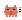
pmJohn 📋
Story scopée : WHAT/WHY, critères d'acceptation, et le test « cahier
des charges » — Prohibition (Atari ST, 1987) l'avait-il ? — contre
PROJECT_GUIDELINES.md. Cœur de boucle : Récupérer → Livrer → Éviter.
Design
si la story touche le gameplay, la fiction ou les écrans/flows/accessibilité
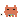
game-designerSacha 🎮
Mécaniques, valeurs de tuning, 3C — specs dans docs/game-design/.
Jamais de code.
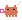
narrative-designerYasmine ✒️Univers, cast (Muf, DISPATCH, KENZA…), chaque mot visible par le joueur. Livrables disjoints, en parallèle.
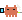
ux-designerTony 🖱️
Écrans, flows, ergonomie du HUD, accessibilité — specs UX dans
docs/game-design/ux/.
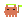
Design gatelead-game-designer · Karim 🧭PASS/FAIL par livrable : scope, cœur de boucle, vérifiabilité, cohérence avec les specs gatées et la bible art. Aucun dev n'implémente un design non gaté.
Tech plan
le comment
 senior-architectWinston 🏗️
senior-architectWinston 🏗️
Faisabilité, frontières (la loi : src/game sans
React/Three, src/render sans règles de jeu, src/hooks
seul pont), ADR si besoin (numéro alloué par Marion), et
partition des lanes — dev + art + audio, chemins disjoints.
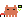
Build — lanes parallèles
lancées en un seul message, chemins non chevauchants
Dev
-
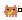
dev-gameplay · Amelia 🧠src/game/**pur, TDD Vitest, hooks côté logique -
 dev-r3f-render · Amelia 🎨
dev-r3f-render · Amelia 🎨
src/render/**R3F, hooks côté vue — livre des screenshots réels pour tout visuel composé au runtime -
 dev-tooling-assets · Amelia 🛠️
dev-tooling-assets · Amelia 🛠️
scripts/, structure delevelArt.json, CI -
Seul seam partagé :
src/hooks/**— annoncé, sérialisé, jamais co-édité.
Art si visuels requis
-
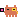
art-advisor · Estelle 📼 références, ancrage culturel (conseil, lecture seule) -
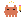
concept-artist · Maud ✍️ prompts FLUX danslevelArt.json -
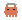
game-graphist · Serge 🕹️ passe PRÉ-PROD : lisibilité à la taille jeu, keying -
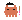
lead-art · Nico 🎯 — PROMPT GATE +check-art-prompts.mjsen CI - Génération CI marker push → render farm, retries bornés
- game-graphist · Serge 🕹️ passe TECHNIQUE : inspection taille réelle, nettoyage franges
-
lead-art · Nico 🎯 — ASSET GATE
PASS/FAIL vs
docs/art-direction.md
Audio si son requis
-
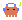
sound-designer · Malik 🎧 spec : caractère, tiers BGM, fonction — « ce qui sonne informe » -
sourcing / génération
mécanique
dev-tooling-assets, licence vérifiée par asset -
sound-designer · Malik 🎧 — AUDIO GATE
PASS/FAIL vs
docs/audio-direction.md; ce qui exige des oreilles humaines part en shortlist chez Bertrand
Verify
l'étape de test, orchestrée par qa-lead · Inès 🧪 — plan par story dans
docs/qa/
rtk tsc · rtk vitest (100%) ·
rtk lint — tout vert, sans triche.
verifyPour tout changement visible par le joueur, preuves par screenshots.
docs/perf-budget.md ; ce que CI ne mesure pas part en protocole on-target
(DEFERRED tracé, chassé par Marion).
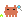
Quality gateqa-lead · Inès 🧪Le verdict entonnoir : « le plan a tourné et a tenu ». PASS requis avant l'étape 6 ; FAIL renvoie à la lane propriétaire, avec le cas défaillant nommé.
Review — panel + triage
merge gate obligatoire · 4 reviewers en parallèle sur
git diff origin/main...HEAD
bugs de correction, réutilisation, simplification, efficacité
couches adverses BMAD : Blind Hunter, Edge Case Hunter, Acceptance Auditor
chaque branche et condition limite du diff
surface contrôlée par l'attaquant : URL params, localStorage, chemins d'assets
senior-architectWinston 🏗️ — triage + revue d'intégration, une seule lecture
Chaque finding non trivial est vérifié de façon adverse (un sceptique tente de le réfuter contre le vrai code) ; seuls les CONFIRMED comptent. Winston triage et prescrit — la lane propriétaire applique les fixes, jamais lui. Aucun merge avec un finding CONFIRMED bloquant/majeur non résolu.
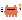
tech-writerOtis 📚 — lane DOCSLes findings documentaires du triage (ADR, bibles, README, JSDoc) lui sont routés : rédaction d'ADR (les décisions restent à Winston), réalignements de doc, cohérence doc↔code.
Accept
retour au produit
Acceptation contre la story et PROJECT_GUIDELINES. Rejet → retour à la
lane propriétaire.
Merge
Bertrand — ou son instruction explicite pour cette branche
main. Le cycle complet est traçable dans le shard de la story
(docs/handoffs/story-<slug>.md). Une préférence générale n'est jamais
une autorité de merge.
La fix lane — voie de contournement
Le pipeline complet existe pour les features. Un petit fix ne se déguise pas en feature : une seule lane propriétaire, pas de surface design, ni asset, ni architecture, un diff tenable en une lecture.
Loggée en une ligne dans docs/handoffs/fixes.md. Un critère
cassé en route ⇒ escalade vers le pipeline complet à l'étape violée. Doute ⇒ pipeline
complet. Tout gate owner (Nico, Karim, Malik, Ben, Winston) peut réclamer un fix qui
touche sa surface.
Les règles qui tiennent tout
src/game n'importe jamais React/Three ; src/render ne porte
aucune règle de jeu ; src/hooks est l'unique pont. Toute traversée ⇒
sign-off Winston.
VERDICT: PASS|FAIL — dans
docs/handoffs/story-<slug>.md (index
docs/agent-handoffs.md). Non loggé = pas arrivé.